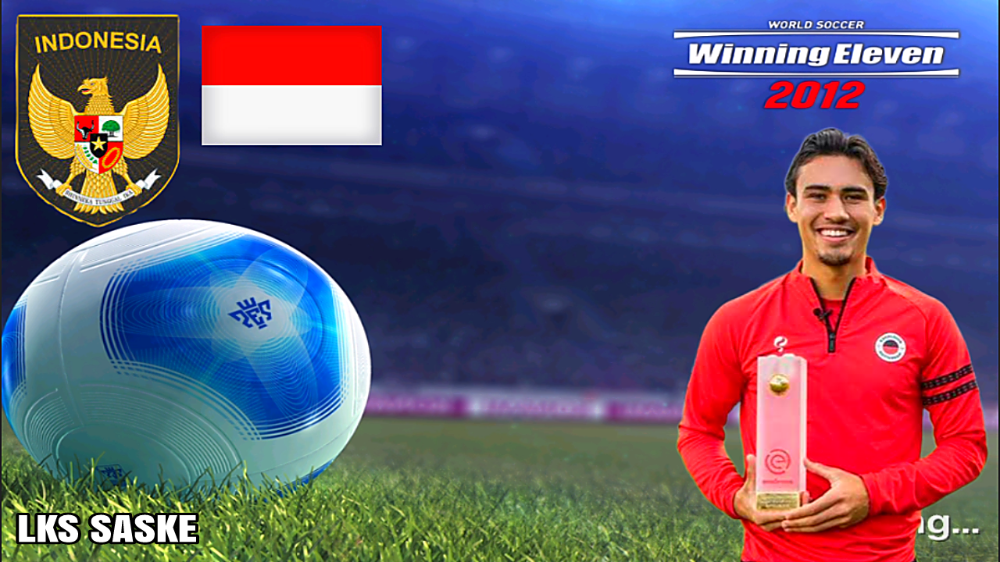

NEW TRANSFER & UPDATE TIMNAS INDONESIA NATURALISASI

FOLLOW US ON;
Winning Eleven
is a popular soccer video game franchise developed by Konami. The game is known for its realistic gameplay, advanced graphics, and extensive customization options. Winning Eleven 2023 is the latest installment in the series, and with the latest update focused on Indonesia, players can expect a whole new level of excitement and challenge.
The Winning Eleven 2023 Indonesia update introduces a range of new features and improvements that cater specifically to Indonesian players and fans. One of the most significant additions is the inclusion of the Indonesian national team in the game. Players can now choose to represent Indonesia on the virtual pitch and compete against other national teams from around the world.
In addition to the national team, the update also brings several Indonesian club teams into the game. Players can now play as their favorite Indonesian clubs, such as Persija Jakarta, Arema FC, and Bali United, among others. This adds a new level of authenticity and immersion to the game, allowing Indonesian players to enjoy their local soccer teams in the virtual world.
The update also includes new stadiums inspired by real-life Indonesian venues. Players can now play matches in iconic stadiums like Gelora Bung Karno Stadium in Jakarta or Si Jalak Harupat Stadium in Bandung. These new stadiums not only provide a more realistic gaming experience but also showcase the rich soccer culture and history of Indonesia.
In addition to the national team, club teams, and stadiums, the update also includes new player faces and animations for Indonesian players. This attention to detail adds an extra layer of realism to the game, making it feel like you are watching a live soccer match on TV. The update also includes new commentary in Bahasa Indonesia, further enhancing the authenticity of the game for Indonesian players.
One of the most exciting features of the Winning Eleven 2023 Indonesia update is the addition of a new game mode called Liga 1 Indonesia. In this mode, players can compete in a simulated Indonesian league season, complete with promotion and relegation, cup competitions, and all the drama and excitement of real-life soccer leagues. This mode allows players to experience the thrill of managing and playing for their favorite Indonesian clubs, leading them to glory and success.
The update also introduces new gameplay mechanics and improvements to enhance the overall gaming experience. Players can now enjoy smoother controls, more responsive gameplay, and improved graphics and animations. These enhancements make Winning Eleven 2023 even more engaging and enjoyable to play, keeping players coming back for more.
The Winning Eleven 2023 Indonesia update is a testament to Konami's commitment to providing a tailored and authentic gaming experience for players around the world. By focusing on Indonesia with this update, Konami has shown a deep understanding of the local soccer culture and a dedication to delivering a game that resonates with Indonesian players.
Overall, the Winning Eleven 2023 Indonesia update is a game-changer for soccer fans in Indonesia. With its new features, improvements, and focus on Indonesian teams and players, the update offers an unparalleled gaming experience that celebrates Indonesia's passion for soccer. Whether you are a fan of the national team or a supporter of a local club, Winning Eleven 2023 Indonesia update has something for everyone, making it a must-play for all soccer enthusiasts in Indonesia.